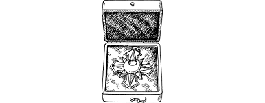

350
A special escort is provided for you and Lord Rimoah. In the company of Prince Torfan, you are taken by carriage to the Grand Hall where a magnificent reception awaits you. Formally you are presented to King Ryvin and you receive his praise and heartfelt thanks for the victory you have secured for his beleaguered kingdom. You return to him the Andarin Bloodstone, and he awards to you the Cross of Boradon—the highest accolade for courage and gallantry in the Kingdom of Bor. During the informal celebrations that take place shortly afterwards, you are further awarded the freedom of Bor and the honorary rank and title of War-thane—a rare privilege for one not born of Drodarin stock. (Erase the Andarin Bloodstone from your Action Chart.)
{kind=link}

After a day of rest, you and Lord Rimoah make a triumphant return to Sommerlund aboard Cloud-dancer. The news of your victory has travelled ahead of you and your arrival at the monastery is greeted by the appreciative cheers of your fellow kinsmen. For your triumph over Shom’zaa, and the preservation of the Throne of Andarin, you receive special praise and admiration from Supreme Master Lone Wolf himself.
Congratulations, Grand Master. You have met this testing quest and you have triumphed. Your brave and courageous actions in Bor will long be remembered in the legends of the New Order Kai. Yet the fight against Evil has not yet ended. Soon your courage and Kai skills will be put to the test again, in a distant realm of Magnamund. The nature of the quest and the dangers that await you will be revealed in the next exciting Lone Wolf New Order adventure entitled: